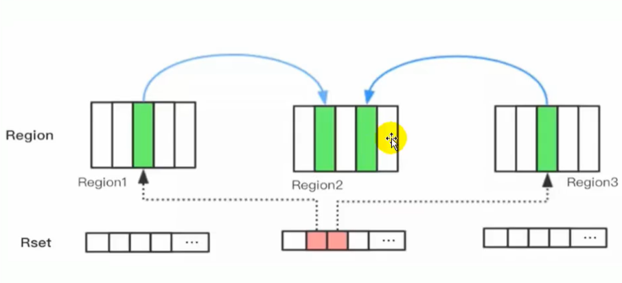

①JVM概述
❶基本介绍
JVM：全称 Java Virtual Machine，一个虚拟计算机，Java 程序的运行环境（Java二进制字节码的运行环境）
特点：
- Java 虚拟机基于二进制字节码执行，由一套字节码指令集、一组寄存器、一个栈、一个垃圾回收堆、一个方法区等组成
- JVM 屏蔽了与操作系统平台相关的信息，从而能够让 Java 程序只需要生成能够在 JVM 上运行的字节码文件，通过该机制实现的跨平台性。即一次编译，处处执行
- 自动的内存管理，垃圾回收机制
JVM 结构：


Java 代码执行流程：Java 程序 --（编译）--> 字节码文件 --（解释执行）--> 操作系统（Win，Linux）
 |
 |
|---|
JVM、JRE、JDK 对比：
- JDK(Java SE Development Kit)：Java 标准开发包，提供了编译、运行 Java 程序所需的各种工具和资源
- JRE( Java Runtime Environment)：Java 运行环境，用于解释执行 Java 的字节码文件

❷架构模型
Java 编译器输入的指令流是一种基于栈的指令集架构。因为跨平台的设计，Java 的指令都是根据栈来设计的，不同平台 CPU 架构不同，所以不能设计为基于寄存器架构
- 基于栈式架构的特点：
- 设计和实现简单，适用于资源受限的系统
- 使用零地址指令方式分配，执行过程依赖操作栈，指令集更小，编译器容易实现
- 零地址指令：机器指令的一种，是指令系统中的一种不设地址字段的指令，只有操作码而没有地址码。这种指令有两种情况：一是无需操作数，另一种是操作数为默认的（隐含的），默认为操作数在寄存器（ACC）中，指令可直接访问寄存器
- 一地址指令：一个操作码对应一个地址码，通过地址码寻找操作数
- 不需要硬件的支持，可移植性更好，更好实现跨平台
- 基于寄存器架构的特点：
- 需要硬件的支持，可移植性差
- 性能更好，执行更高效，寄存器比内存快
- 以一地址指令、二地址指令、三地址指令为主，而基于栈式架构的指令集却是以零地址指令为主
❸生命周期
JVM 的生命周期分为三个阶段，分别为：启动、运行、死亡
启动：当启动一个 Java 程序时，通过引导类加载器（bootstrap class loader）创建一个初始类（initial class），对于拥有 main 函数的类就是 JVM 实例运行的起点
运行：
main() 方法是一个程序的初始起点，任何线程均可由在此处启动
在 JVM 内部有两种线程类型，分别为：用户线程和守护线程，JVM 使用的是守护线程，main() 和其他线程使用的是用户线程，守护线程会随着用户线程的结束而结束
执行一个 Java 程序时，真真正正在执行的是一个 Java 虚拟机的进程
JVM 有两种运行模式 Server 与 Client，两种模式的区别在于：Client 模式启动速度较快，Server 模式启动较慢；但是启动进入稳定期长期运行之后 Server 模式的程序运行速度比 Client 要快很多
Server 模式启动的 JVM 采用的是重量级的虚拟机，对程序采用了更多的优化；Client 模式启动的 JVM 采用的是轻量级的虚拟机
死亡：
- 当程序中的用户线程都中止，JVM 才会退出
- 程序正常执行结束、程序异常或错误而异常终止、操作系统错误导致终止
- 线程调用 Runtime 类 halt 方法或 System 类 exit 方法，并且 Java 安全管理器允许这次 exit 或 halt 操作
②内存结构
❶JVM内存
0.内存概述
内存结构是 JVM 中非常重要的一部分，是非常重要的系统资源，是硬盘和 CPU 的桥梁，承载着操作系统和应用程序的实时运行，又叫运行时数据区。
JVM 内存结构规定了 Java 在运行过程中内存申请、分配、管理的策略，保证了 JVM 的高效稳定运行
- Java1.8 以前的内存结构图：

- Java1.8 之后的内存结果图：

1.程序计数器
Program Counter Register 程序计数器（寄存器）
作用：内部保存字节码的行号，用于记录正在执行的字节码指令地址（如果正在执行的是本地方法则为空）
原理：
- JVM 对于多线程是通过线程轮流切换并且分配线程执行时间，一个处理器只会处理执行一个线程
- 切换线程需要从程序计数器中来回切换到当前的线程上一次执行的行号
特点：
- 是线程私有的
- 不会存在内存溢出，是 JVM 规范中唯一一个不出现 OOM 的区域，所以这个空间不会进行 GC

2.虚拟机栈
Java 虚拟机栈：Java Virtual Machine Stacks，每个线程运行时所需要的内存
异常：
java.lang.StackOverflowError

每个方法被执行时，都会在虚拟机栈中创建一个栈帧 stack frame（一个方法一个栈帧）
Java 虚拟机规范允许 Java 栈的大小是动态的或者是固定不变的
虚拟机栈是每个线程私有的，每个线程只能有一个活动栈帧，对应方法调用到执行完成的整个过程
每个栈由多个栈帧（Frame）组成，对应着每次方法调用时所占用的内存，每个栈帧中存储着：
- 局部变量表：存储方法里的 Java 基本数据类型以及对象的引用（reference 类型）
- 动态链接：也叫指向运行时常量池的方法引用
- 方法返回地址：方法正常退出或者异常退出的定义
- 操作数栈或表达式栈和其他一些附加信息
设置栈内存大小：-Xss size -Xss 1024k（在 VM options 中设置）
- 在 JDK 1.4 中默认为 256K，而在 JDK 1.5+ 默认为 1M
虚拟机栈特点：
栈内存不需要进行GC，方法开始执行的时候会进栈，方法调用后自动弹栈，相当于清空了数据
栈内存分配越大，可用的线程数越少（内存越大，每个线程拥有的内存越大）
方法内的局部变量是否线程安全：
- 如果方法内局部变量没有逃离方法的作用访问，它是线程安全的（逃逸分析）
- 如果是局部变量引用了对象，并逃离方法的作用范围，需要考虑线程安全
异常：
- 栈帧过多导致栈内存溢出 （超过了栈的容量），会抛出 OutOfMemoryError 异常
- 当线程请求的栈深度超过虚拟机允许的最大深度时，会抛出 StackOverflowError 异常
线程运行诊断：
- 定位：
- jps 定位进程 ID
- top定位哪个进程对cpu的占用过高
- ps -eo pid,%cpu | grep 进程id （用ps命令进一步定位是哪个线程引起的cpu占用过高）
- jstack 进程 ID：用于打印出给定的 Java 进程 ID 或 core file 或远程调试服务的 Java 堆栈信息
3.本地方法栈
本地方法栈：Native Method Stacks， 为虚拟机执行本地方法（native方法）时提供服务的
- 本地方法一般是由其他语言编写（C/C++），并且被编译为基于本机硬件和操作系统的程序
- 与虚拟机栈类似，不需要进行 GC，也是线程私有的，有 StackOverFlowError 和 OutOfMemoryError 异常
- 本地方法用
native关键字修饰，例如：Object类中的wait()、clone()、hashCode等
public final native void wait();
public native int hashCode();
protected native Object clone();
当某个线程调用一个本地方法时，就进入了不再受虚拟机限制的世界，和虚拟机拥有同样的权限
- 本地方法可以通过本地方法接口（JNI：Java Native Interface）来访问虚拟机内部的运行时数据区
- 直接从本地内存的堆中分配任意数量的内存
- 可以直接使用本地处理器中的寄存器
4.堆
堆概述
堆：Heap ，是 JVM 内存中最大的一块，由所有线程共享，由垃圾回收器管理的主要区域，堆中对象大部分都需要考虑线程安全的问题
异常：java.lang.OutOfMemoryError：java heap space

存放哪些资源：
- 对象实例：new 创建的对象，类初始化生成的对象，基本数据类型的数组也是对象实例(new 创建)
- 字符串常量池 StringTable/String Pool： JVM 为了提升性能和减少内存消耗针对字符串（String 类）专门开辟的一块区域，主要目的是为了避免字符串的重复创建。
- 字符串常量池原本存放于方法区，JDK7 开始放置于堆中
- 字符串常量池存储的是 String 对象的直接引用或者对象，是一张 stringTable
- 静态变量：静态变量是有 static 修饰的变量，JDK8 时从方法区迁移至堆中
- 线程分配缓冲区 Thread Local Allocation Buffer：线程私有但不影响堆的共性，可以提升对象分配的效率
内存溢出：new 出对象，循环添加字符数据，当堆中没有内存空间可分配给实例，也无法再扩展时，就会抛出 OutOfMemoryError 异常
设置堆内存指令：-Xmx Size
/**
* 演示堆内存溢出 java.lang.OutOfMemoryError: Java heap space
* -Xmx8m
*/
public class Demo1_5 {
public static void main(String[] args) {
int i = 0;
try {
List<String> list = new ArrayList<>();
String a = "hello";
while (true) {
list.add(a); // hello, hellohello, hellohellohellohello ...
a = a + a; // hellohellohellohello
i++;
}
} catch (Throwable e) {
e.printStackTrace();
System.out.println(i);
}
}
}
堆内存诊断工具
- jps：查看当前系统中有哪些 Java 进程
- jmap：查看某一时刻堆内存占用情况
jhsdb jmap --heap --pid 进程id - jconsole：图形界面的，多功能的监测工具，可以连续监测
- jvisualvm：图形界面的，多功能的监测工具，可以连续监测
Java7/8堆变化

在 Java7 中堆内会存在年轻代、老年代和方法区（永久代），Java8 永久代被元空间代替了
- Young 区被划分为三部分，Eden 区和两个大小严格相同的 Survivor 区。Survivor 区某一时刻只有其中一个是被使用的，另外一个留做垃圾回收时复制对象。在 Eden 区变满的时候，GC 就会将存活的对象移到空闲的 Survivor 区间中，根据 JVM 的策略，在经过几次垃圾回收后，仍然存活于 Survivor 的对象将被移动到 Tenured 区间
- Old 区主要保存生命周期长的对象，一般是一些老的对象，当一些对象在 Young 复制转移一定的次数以后，对象就会被转移到 Tenured 区
- Perm 代主要保存 Class、ClassLoader、静态变量、常量、编译后的代码，在 Java7 中堆内方法区会受到 GC 的管理
分代原因：不同对象的生命周期不同，70%-99% 的对象都是临时对象，优化 GC 性能
public static void main(String[] args) {
// 返回Java虚拟机中的堆内存总量
long initialMemory = Runtime.getRuntime().totalMemory() / 1024 / 1024;
// 返回Java虚拟机使用的最大堆内存量
long maxMemory = Runtime.getRuntime().maxMemory() / 1024 / 1024;
System.out.println("-Xms : " + initialMemory + "M");//-Xms : 245M
System.out.println("-Xmx : " + maxMemory + "M");//-Xmx : 3641M
}
StringTable/String Pool
字符串常量池（String Pool / StringTable / 串池）存储的是 String 对象的直接引用或者对象，即保存着所有字符串字面量（literal strings），这些字面量在编译时期就确定，字符串常量池类似于 Java 系统级别提供的缓存，存放对象和引用
StringTable，类似 HashTable 结构，通过
-XX:StringTableSize设置大小，JDK 1.8 中默认 60013
字符串拼接
- 常量池中的字符串仅是符号，第一次使用时才变为对象(加入到运行时常量池),可以避免重复创建字符串对象
// 字符串常量池(StringTable): [ "a", "b" ,"ab" ] hashtable 结构，不能扩容
public static void main(String[] args) {
String s1 = "a"; // 懒惰的
String s2 = "b";
String s3 = "ab";
}
字节码：Java 反编译指令javap -v 文件名.class
//常量池
// 常量池中的信息，都会被加载到运行时常量池中，
// 这时 a b ab 都是常量池中的符号，还没有变为 java 字符串对象，是懒惰的
Constant pool:
#1 = Methodref #12.#36 // java/lang/Object."<init>":()V
#2 = String #37 // a
#3 = String #38 // b
#4 = String #39 // ab
//运行代码
0: ldc #2 // String a
2: astore_1 //存入局部变量表slot 1号位
3: ldc #3 // String b
5: astore_2
6: ldc #4 // String ab
8: astore_3
// ldc #2 会把 a 符号变为 "a" 字符串对象，StringTable: ["a"]
// ldc #3 会把 b 符号变为 "b" 字符串对象，StringTable: ["a", "b"]
// ldc #4 会把 ab 符号变为 "ab" 字符串对象，StringTable: ["a", "b" ,"ab"]
//局部变量表(栈)
LocalVariableTable:
Start Length Slot Name Signature
0 51 0 args [Ljava/lang/String;
3 48 1 s1 Ljava/lang/String;
6 45 2 s2 Ljava/lang/String;
9 42 3 s3 Ljava/lang/String;
- 字符串变量的拼接的原理是 StringBuilder#append，append 方法比字符串拼接效率高（JDK 1.8）
- 字符串常量拼接的原理是编译期优化，拼接结果放入常量池
// 字符串常量池(StringTable): [ "a", "b" ,"ab" ] hashtable 结构，不能扩容
public static void main(String[] args) {
String s1 = "a"; // 懒惰的
String s2 = "b";
String s3 = "ab";
// new StringBuilder().append("a").append("b").toString() --> new String("ab") 堆中
String s4 = s1 + s2; //字符串变量 // 返回的是堆内地址
// javac 在编译期间的优化，结果已经在编译期确定为ab
String s5 = "a" + "b"; //字符串常量
System.out.println(s3 == s4); // F
System.out.println(s3 == s5); // T
}
intern()
JDK 1.8：将这个字符串对象尝试放入串池，如果 String Pool 中：
- 存在一个字符串和该字符串值相等，就会返回 String Pool 中字符串的引用（需要变量接收）
- 不存在，会把对象的引用地址复制一份放入串池，并返回串池中的引用地址，前提是堆内存有该对象，因为 Pool 在堆中，为了节省内存不再创建新对象
JDK 1.6：将这个字符串对象尝试放入串池，如果 String Pool 中：
- 如果有就不放入，返回已有的串池中的对象的引用；
- 如果没有会把此对象复制一份，放入串池，把串池中的对象返回
// StringTable: ["ab", "a", "b"]
public static void main(String[] args) {
String x = "ab"; // StringTable: ["ab"]
// 堆 new String("a") new String("b") new StringBuilder() new String("ab")
// StringTable: ["ab", "a", "b"]
String s = new String("a") + new String("b"); // s只存在堆中，不存在StringTable
// 将这个字符串对象尝试放入串池，如果有则并不会放入，如果没有则放入串池， 会把串池中的对象返回
String s2 = s.intern();
System.out.println(s == x); // F
System.out.println(s2 == x); // T
}
- == 比较基本数据类型：比较的是具体的值
- == 比较引用数据类型：比较的是对象地址值
结论：
String s1 = "ab"; // ab仅放入串池 StringTable: ["ab"]
String s2 = new String("a") + new String("b"); // ab仅放入堆 StringTable: ["a","b"]
String s = new String("ab"); // ab串池和堆都存在 StringTable: ["ab"]
常见问题
问题一：
public static void main(String[] args) {
String s = new String("a") + new String("b");//new String("ab")
//在上一行代码执行完以后，字符串常量池中并没有"ab"
String s2 = s.intern();
//jdk6：串池中创建一个字符串"ab"，把此对象复制一份
//jdk8：串池中没有创建字符串"ab",而是创建一个引用指向 new String("ab")，将此引用返回
System.out.println(s2 == "ab");//jdk6:true jdk8:true
System.out.println(s == "ab");//jdk6:false jdk8:true
}
问题二：
public static void main(String[] args) {
String str1 = new StringBuilder("58").append("tongcheng").toString();
System.out.println(str1 == str1.intern());//true，字符串池中不存在，把堆中的引用复制一份放入串池
String str2 = new StringBuilder("ja").append("va").toString();
System.out.println(str2 == str2.intern());//false，字符串池中存在，直接返回已经存在的引用
}
原因：
System 类当调用 Version 的静态方法，导致 Version 初始化：
private static void initializeSystemClass() { sun.misc.Version.init(); }Version 类初始化时需要对静态常量字段初始化，被 launcher_name 静态常量字段所引用的
"java"字符串字面量就被放入的字符串常量池：package sun.misc; public class Version { private static final String launcher_name = "java"; private static final String java_version = "1.8.0_221"; private static final String java_runtime_name = "Java(TM) SE Runtime Environment"; private static final String java_profile_name = ""; private static final String java_runtime_version = "1.8.0_221-b11"; //... }
内存位置
Java 7 之前，String Pool 被放在运行时常量池中，属于永久代；Java 7 以后，String Pool 被移到堆中，这是因为永久代的空间有限，在大量使用字符串的场景下会导致 OutOfMemoryError 错误
演示 StringTable 位置：
-Xmx10m设置堆内存 10m在 JDK8 下设置：
-Xmx10m -XX:-UseGCOverheadLimit在 JDK6 下设置：
-XX:MaxPermSize=10mpublic static void main(String[] args) throws InterruptedException { List<String> list = new ArrayList<String>(); int i = 0; try { for (int j = 0; j < 260000; j++) { list.add(String.valueOf(j).intern()); i++; } } catch (Throwable e) { e.printStackTrace(); } finally { System.out.println(i); } }

优化常量池
两种方式：
调整
-XX:StringTableSize=桶个数，数量越少，性能越差intern 将字符串对象放入常量池，通过复用字符串的引用，减少内存占用
/**
* 演示 intern 减少内存占用
* -XX:StringTableSize=200000 -XX:+PrintStringTableStatistics
* -Xsx500m -Xmx500m -XX:+PrintStringTableStatistics -XX:StringTableSize=200000
*/
public class Demo1_25 {
public static void main(String[] args) throws IOException {
List<String> address = new ArrayList<>();
System.in.read();
for (int i = 0; i < 10; i++) {
//很多数据
try (BufferedReader reader = new BufferedReader(new InputStreamReader(new FileInputStream("linux.words"), "utf-8"))) {
String line = null;
long start = System.nanoTime();
while (true) {
line = reader.readLine();
if(line == null) {
break;
}
address.add(line.intern());
}
System.out.println("cost:" +(System.nanoTime()-start)/1000000);
}
}
System.in.read();
}
}
不可变好处
- 可以缓存 hash 值，例如 String 用做 HashMap 的 key，不可变的特性可以使得 hash 值也不可变，只要进行一次计算
- String Pool 的需要，如果一个 String 对象已经被创建过了，就会从 String Pool 中取得引用，只有 String 是不可变的，才可能使用 String Pool
- 安全性，String 经常作为参数，String 不可变性可以保证参数不可变。例如在作为网络连接参数的情况下如果 String 是可变的，那么在网络连接过程中，String 被改变，改变 String 的那一方以为现在连接的是其它主机，而实际情况却不一定是
- String 不可变性天生具备线程安全，可以在多个线程中安全地使用
- 防止子类继承，破坏 String 的 API 的使用
5.方法区
方法区 Method Area：是各个线程共享的内存区域，用于存储已被虚拟机加载的类信息、常量、即时编译器编译后的代码等数据，虽然 Java 虚拟机规范把方法区描述为堆的一个逻辑部分，但是也叫 Non-Heap（非堆）
Java 1.8 以前：方法区由永久代实现
Java 1.8 之后：方法区由元空间实现
异常：java.lang.OutOfMemoryError：Metaspace

方法区构成：
类元信息：在类编译期间放入方法区，存放了类的基本信息，包括类的方法、参数、接口以及常量池表
常量池表（Constant Pool Table）是 Class 文件的一部分，存储了类在编译期间生成的字面量、符号引用，JVM 为每个已加载的类维护一个常量池
字面量：基本数据类型、字符串类型常量、声明为 final 的常量值等
java 代码在编译过程中是无法构建引用的，字面量就是在编译时对于数据的一种表示
int a = 1; //这个1便是字面量 String b = "iloveu"; //iloveu便是字面量
符号引用：类、字段、方法、接口等的符号引用
- 在编译过程中并不知道每个类的地址，因为可能这个类还没有加载，如果在一个类中引用了另一个类，无法知道它的内存地址，只能用它的类名作为符号引用，在类加载完后用这个符号引用去获取内存地址
运行时常量池
常量池（编译器生成的字面量和符号引用）中的数据会在类加载的加载阶段放入运行时常量池
类在解析阶段将这些符号引用替换成直接引用
除了在编译期生成的常量，还允许动态生成，例如 String 类的 intern()
特点：
方法区是一个 JVM 规范，永久代与元空间都是其一种实现方式
方法区的大小不必是固定的，可以动态扩展，加载的类太多，可能导致永久代内存溢出 (OutOfMemoryError)
方法区的 GC：针对常量池的回收及对类型的卸载，比较难实现
为了避免方法区出现 OOM，在 JDK8 中将堆内的方法区（永久代）移动到了本地内存上，重新开辟了一块空间，叫做元空间，元空间存储类的元信息，静态变量和字符串常量池等放入堆中
- Java 1.8 以前：永久代内存溢出 java.lang.OutOfMemoryError: PermGen space
- Java 1.8 之后：元空间内存溢出 java.lang.OutOfMemoryError: Metaspace
❷本地内存

JVM内存：Java 虚拟机在执行的时候会把管理的内存分配成不同的区域，受虚拟机内存大小的参数控制，当大小超过参数设置的大小时就会报 OOM
本地内存：又叫做堆外内存，线程共享的区域，本地内存这块区域是不会受到 JVM 的控制的，不会发生 GC；因此对于整个 Java 的执行效率是提升非常大，但是如果内存的占用超出物理内存的大小，同样也会报 OOM
1.方法区/元空间
Java8 开始 PermGen 被元空间代替，永久代的类信息、方法、常量池等都移动到元空间区
元空间与永久代区别：元空间不在虚拟机中，使用的本地内存，默认情况下，元空间的大小仅受本地内存限制
方法区内存溢出：
JDK1.8 以前会导致永久代内存溢出：java.lang.OutOfMemoryError: PerGen space
-XX:MaxPermSize=8m #参数设置JDK1.8 以后会导致元空间内存溢出：java.lang.OutOfMemoryError: Metaspace
-XX:MaxMetaspaceSize=8m #参数设置
元空间内存溢出演示：
/**
* 演示元空间内存溢出 java.lang.OutOfMemoryError: Metaspace
* -XX:MaxMetaspaceSize=8m
*/
public class Demo1_8 extends ClassLoader { // 可以用来加载类的二进制字节码
public static void main(String[] args) {
int j = 0;
try {
Demo1_8 test = new Demo1_8();
for (int i = 0; i < 10000; i++, j++) {
// ClassWriter 作用是生成类的二进制字节码
ClassWriter cw = new ClassWriter(0);
// 版本号， public， 类名, 包名, 父类， 接口
cw.visit(Opcodes.V1_8, Opcodes.ACC_PUBLIC, "Class" + i, null, "java/lang/Object", null);
// 返回 byte[]
byte[] code = cw.toByteArray();
// 执行了类的加载
test.defineClass("Class" + i, code, 0, code.length); // Class 对象
}
} finally {
System.out.println(j);
}
}
}
2.直接内存
直接内存是 Java 堆外、直接向系统申请的内存区间，不是虚拟机运行时数据区的一部分，也不是《Java 虚拟机规范》中定义的内存区域，但是这部分内存也被频繁地使用。而且也可能导致 OutOfMemoryError 错误出现。
概述
Direct Memory 优点：
- Java 的 NIO 库允许 Java 程序使用直接内存，使用 native 函数直接分配堆外内存
- 读写性能高，读写频繁的场合可能会考虑使用直接内存
- 大大提高 IO 性能，避免了在 Java 堆和 native 堆来回复制数据
直接内存缺点：
- 不能使用内核缓冲区 Page Cache 的缓存优势，无法缓存最近被访问的数据和使用预读功能
- 分配回收成本较高，不受 JVM 内存回收管理
- 可能导致 OutOfMemoryError 异常：OutOfMemoryError: Direct buffer memory
- 回收依赖 System.gc() 的调用，但这个调用 JVM 不保证执行、也不保证何时执行，行为是不可控的。程序一般需要自行管理，成对去调用 malloc、free
应用场景：
- 传输很大的数据文件，数据的生命周期很长，导致 Page Cache 没有起到缓存的作用，一般采用直接 IO 的方式
- 适合频繁的 IO 操作，比如网络并发场景
数据流的角度：
- 非直接内存的作用链：本地 IO → 内核缓冲区→ 用户（JVM）缓冲区 →内核缓冲区 → 本地 IO
- 直接内存的作用链：本地 IO → 直接内存 → 本地 IO
| 直接内存 |  |
|---|---|
| 非直 接内存 |  |
ByteBuffer

ByteBuffer 有两种类型：
- 一种是基于直接内存（非堆内存）：DirectByteBuffer
- 一种是非直接内存（堆内存）：HeapByteBuffer
| 描述 | 优点 | |
|---|---|---|
| HeapByteBuffer | 在jvm堆上面的一个buffer，底层的本质是一个数组 | 由于内容维护在jvm里，所以把内容写进buffer里速度会快些；并且，可以更容易回收 |
| DirectByteBuffer | 底层的数据其实是维护在操作系统的内存中，而不是jvm里，DirectByteBuffer里维护了一个引用address指向了数据，从而操作数据 | 跟外设（IO设备）打交道时会快很多，因为外设读取jvm堆里的数据时，不是直接读取的，而是把jvm里的数据读到一个内存块里，再在这个块里读取的，如果使用DirectByteBuffer，则可以省去这一步，实现zero copy |
分配回收
直接内存 DirectByteBuffer 源码分析：
DirectByteBuffer(int cap) {
//....
long base = 0;
try {
// 分配直接内存
base = unsafe.allocateMemory(size);
}
// 内存赋值
unsafe.setMemory(base, size, (byte) 0);
if (pa && (base % ps != 0)) {
address = base + ps - (base & (ps - 1));
} else {
address = base;
}
// 创建回收函数
cleaner = Cleaner.create(this, new Deallocator(base, size, cap));
}
private static class Deallocator implements Runnable {
public void run() {
unsafe.freeMemory(address);// 释放内存
//...
}
}
分配和回收原理：
- 使用了
Unsafe对象的allocateMemory方法完成直接内存的分配，setMemory 方法完成赋值 - ByteBuffer 的实现类内部，使用了 Cleaner（虚引用）来监测 ByteBuffer 对象，一旦 ByteBuffer 对象被垃圾回收，那么 ReferenceHandler 线程通过 Cleaner 的 clean 方法调用 Deallocator 的 run方法，最后通过
freeMemory来释放直接内存
❸JVM运行原理
接下来，我们通过一个案例来了解下代码和对象是如何分配存储的，Java 代码又是如何在 JVM 中运行的。
public class JVMCase {
// 常量
public final static String MAN_SEX_TYPE = "man";
// 静态变量
public static String WOMAN_SEX_TYPE = "woman";
// 静态方法
public static void print(Student stu) {
System.out.println("name: " + stu.getName() + "; sex:" + stu.getSexType() + "; age:" + stu.getAge());
}
// 非静态方法
public void sayHello(Student stu) {
System.out.println(stu.getName() + "say: hello");
}
public static void main(String[] args) {
Student stu = new Student();
stu.setName("nick");
stu.setSexType(MAN_SEX_TYPE);
stu.setAge(20);
JVMCase jvmcase = new JVMCase();
// 调用静态方法
print(stu);
// 调用非静态方法
jvmcase.sayHello(stu);
}
}
@Data
class Student{
String name;
String sexType;
int age;
}
运行上面代码时，JVM的整个处理过程如下：
- 1.JVM 向操作系统申请内存，JVM 首先通过配置参数或者默认配置参数向操作系统申请内存空间，根据内存大小找到具体的内存分配表，然后把内存段的起始地址和终止地址分配给 JVM。
- 2.JVM 获得内存空间后，就进行内部分配。JVM 根据配置参数分配堆、栈以及方法区的内存大小。
- 3.class 文件加载、验证、准备以及解析，其中准备阶段会为类的静态变量分配内存，初始化为系统的初始值

4.完成上一个步骤后，将会进行最后一个初始化阶段。在这个阶段中，JVM 首先会执行构造器
<clinit>()方法，编译器会在.java 文件被编译成.class 文件时，收集所有类的初始化代码，包括静态变量赋值语句、静态代码块、静态方法，收集在一起成为<clinit>()方法。
5.执行方法。启动 main 线程，执行 main 方法，开始执行第一行代码。此时堆内存中会创建一个 student 对象，对象引用 student 就存放在栈中。

6.创建一个 JVMCase 对象，调用 sayHello 非静态方法，sayHello 方法属于对象 JVMCase，此时 sayHello 方法入栈，并通过栈中的 student 引用调用堆中的 Student 对象；之后，调用静态方法 print，print 静态方法属于 JVMCase 类，是从静态方法中获取，之后放入到栈中，也通过 student 引用调用堆中的 student 对象。

❹总结
1.异常
常见 Out Of Memory（OOM） 错误：
java.lang.StackOverflowError
- 栈溢出
- 设置栈内存大小：
-Xss size
java.lang.OutOfMemoryError：java heap space
- 堆溢出
- 设置堆内存指令：
-Xmx Size
java.lang.OutOfMemoryError：GC overhead limit exceeded
- 当 JVM 花太多时间执行垃圾回收并且只能回收很少的堆空间时，就会发生此错误。
- 即程序基本上耗尽了所有的可用内存, GC也清理不了。
java.lang.OutOfMemoryError：Direct buffer memory
- 直接内存溢出
java.lang.OutOfMemoryError：unable to create new native thread
- 系统内存耗尽，无法为新线程分配内存或者创建线程数超过了操作系统的限制
java.lang.OutOfMemoryError: PermGen space
- Java 1.8 以前：永久代内存溢出
-
-XX:MaxPermSize=8m
java.lang.OutOfMemoryError：Metaspace
- Java 1.8 之后：元空间内存溢出
-XX:MaxMetaspaceSize=8m
Java 编译指令：javac -g 文件名.java
Java 反编译指令：javap -v 文件名.class
后台运行：nohup java 全路径名
2.三种常量池
常量池：主要存放编译期生成的各种**字面量(Literal)和符号引用(Symbolic References)**。
- 字面量:例如文本字符串、fina修饰的常量。
- 符号引用:例如类和接口的全限定名、字段的名称和描述符、方法的名称和描述符
运行时常量池：运行时常量池里面存储的主要是编译期间生成的字面量、符号引用等等。
- 当类加载到内存中后，JVM就会将常量池中的内容存放到运行时常量池中；
- 类加载在链接环节的解析过程，会符号引用转换成直接引用（静态链接）。此处得到的直接引用也是放到运行时常量池中的。
- 运行期间可以动态放入新的常量。
字符串常量池：可以理解成运行时常量池分出来的一部分。类加载到内存的时候，字符串会存到字符串常量池里面。
- JVM 为了提升性能和减少内存消耗针对字符串（String 类）专门开辟的一块区域，主要目的是为了避免字符串的重复创建。
- JDK6时字符串常量池位于运行时常量池，JDK7挪到堆中。
3者区别？
- 常量池与运行时常量池都存储在方法区，而字符串常量池在 Jdk7 时就已经从方法区迁移到了 Java 堆中
在类编译过程中，会把类元信息放到方法区，类元信息的其中一部分便是常量池，主要存放字面量和符号引用，而字面量的一部分便是文本字符；在类加载时将字面量和符号引用解析为直接引用存储在运行时常量池；对于文本字符，会在解析时查找字符串常量池，查出这个文本字符对应的字符串对象的直接引用，将直接引用存储在运行时常量池
3.变量位置
变量的位置不取决于它是基本数据类型还是引用数据类型，取决于它的声明位置
静态内部类和其他内部类：方法区/堆
一个 class 文件只能对应一个 public 类型的类，这个类可以有内部类，但不会生成新的 class 文件
静态内部类属于类本身，加载到方法区，其他内部类属于内部类的属性，加载到堆
类变量：堆
- 类变量是用 static 修饰符修饰，定义在方法外的变量，随着 Java 进程产生和销毁
- 在 Java8 之前把静态变量存放于方法区，在 Java8 时存放在堆中的静态变量区
实例变量：堆
- 实例（成员）变量是定义在类中，没有 static 修饰的变量，随着类的实例产生和销毁，是类实例的一部分
- 在类初始化的时候，从运行时常量池取出直接引用或者值，与初始化的对象一起放入堆中
局部变量：虚拟机栈
- 局部变量是定义在类的方法中的变量
- 在所在方法被调用时放入虚拟机栈的栈帧中，方法执行结束后从虚拟机栈中弹出
③内存管理
❶内存分配
1.两种方式
JVM 为对象分配内存的过程：首先计算对象占用空间大小，接着在堆中划分一块内存给新对象
- 如果内存规整，使用指针碰撞（Bump The Pointer）。所有用过的内存在一边，空闲的内存在另外一边，中间有一个指针作为分界点的指示器，分配内存就仅仅是把指针向空闲那边挪动一段与对象大小相等的距离
- 如果内存不规整，虚拟机维护一个空闲列表（Free List）。已使用的内存和未使用的内存相互交错，列表上记录哪些内存块是可用的，分配的时候从列表中找到一块足够大的空间划分给对象实例，并更新列表上的内容
2.TLAB
Thread Local Allocation Buffer，TLAB 是虚拟机在堆内存的 Eden 划分出来的一块专用空间，是线程专属的。
在线程初始化时，虚拟机会为每个线程分配一块TLAB空间，只给当前线程使用，这样每个线程都单独拥有一个空间，如果需要分配内存，就在自己的空间上分配，这样就不存在竞争的情况，可以大大提升分配效率。
多线程分配内存时，使用 TLAB 可以避免线程安全问题，同时还能够提升内存分配的吞吐量，这种内存分配方式叫做快速分配策略
我们说TLAB是线程独享的，但是只是在“分配”这个动作上是线程独享的，至于在读取、垃圾回收等动作上都是线程共享的。
- 栈上分配使用的是栈来进行对象内存的分配
- TLAB 分配使用的是 Eden 区域进行内存分配，属于堆内存
堆区是线程共享区域，任何线程都可以访问到堆区中的共享数据，由于对象实例的创建在 JVM 中非常频繁，因此在并发环境下为避免多个线程操作同一地址，需要使用加锁等机制，进而影响分配速度
问题：堆空间都是共享的么？ 不一定，因为还有 TLAB，在堆中划分出一块区域，为每个线程所独占

JVM 是将 TLAB 作为内存分配的首选，但不是所有的对象实例都能够在 TLAB 中成功分配内存，一旦对象在 TLAB 空间分配内存失败时，JVM 就会通过使用加锁机制确保数据操作的原子性，从而直接在堆中分配内存
栈上分配优先于 TLAB 分配进行，逃逸分析中若可进行栈上分配优化，会优先进行对象栈上直接分配内存
参数设置：
-XX:UseTLAB：设置是否开启 TLAB 空间-XX:TLABWasteTargetPercent：设置 TLAB 空间所占用 Eden 空间的百分比大小，默认情况下 TLAB 空间的内存非常小，仅占有整个 Eden 空间的1%-XX:TLABRefillWasteFraction：指当 TLAB 空间不足，请求分配的对象内存大小超过此阈值时不会进行 TLAB 分配，直接进行堆内存分配，否则还是会优先进行 TLAB 分配

3.逃逸分析
即时编译（Just-in-time Compilation，JIT）是一种通过在运行时将字节码翻译为机器码，从而改善性能的技术，在 HotSpot 实现中有多种选择：C1、C2 和 C1+C2，分别对应 Client、Server 和分层编译
- C1 编译速度快，优化方式比较保守；C2 编译速度慢，优化方式比较激进
- C1+C2 在开始阶段采用 C1 编译，当代码运行到一定热度之后采用 C2 重新编译
逃逸分析并不是直接的优化手段，而是一个代码分析方式，通过动态分析对象的作用域，为优化手段如栈上分配、标量替换和同步消除等提供依据，发生逃逸行为的情况有两种：方法逃逸和线程逃逸
- 方法逃逸：当一个对象在方法中定义之后，被外部方法引用
- 全局逃逸：一个对象的作用范围逃出了当前方法或者当前线程，比如对象是一个静态变量、全局变量赋值、已经发生逃逸的对象、作为当前方法的返回值
- 参数逃逸：一个对象被作为方法参数传递或者被参数引用
- 线程逃逸：如类变量或实例变量，可能被其它线程访问到
如果不存在逃逸行为，则可以对该对象进行如下优化：同步消除、标量替换和栈上分配
同步消除
线程同步本身比较耗时，如果确定一个对象不会逃逸出线程，不被其它线程访问到，那对象的读写就不会存在竞争，则可以消除对该对象的同步锁，通过
-XX:+EliminateLocks可以开启同步消除 ( - 号关闭)标量替换
标量替换：如果把一个对象拆散，将其成员变量恢复到基本类型来访问
标量 (scalar) ：不可分割的量，如基本数据类型和 reference 类型
聚合量 (Aggregate)：一个数据可以继续分解，对象一般是聚合量
如果逃逸分析发现一个对象不会被外部访问，并且该对象可以被拆散，那么经过优化之后，并不直接生成该对象，而是将该对象成员变量分解若干个被这个方法使用的成员变量所代替
参数设置：
-XX:+EliminateAllocations：开启标量替换-XX:+PrintEliminateAllocations：查看标量替换情况
栈上分配
JIT 编译器在编译期间根据逃逸分析的结果，如果一个对象没有逃逸出方法的话，就可能被优化成栈上分配。分配完成后，继续在调用栈内执行，最后线程结束，栈空间被回收，局部变量对象也被回收，这样就无需 GC
User 对象的作用域局限在方法 fn 中，可以使用标量替换的优化手段在栈上分配对象的成员变量，这样就不会生成 User 对象，大大减轻 GC 的压力
4.分代思想
分代介绍
Java8 时，堆被分为了两份：新生代和老年代（1:2），在 Java7 时，还存在一个永久代
- 新生代使用：复制算法
- 老年代使用：标记 - 清除 或者 标记 - 整理 算法
Young 区被划分为三部分，Eden 区和两个大小严格相同的 Survivor 区。 Eden 和 Survivor 大小比例默认为 8:1:1
- Survivor 区某一时刻只有其中一个是被使用的，另外一个留做垃圾回收时复制对象。
- 在 Eden 区变满的时候，GC 就会将存活的对象移到空闲的 Survivor 区间中，根据 JVM 的策略，在经过几次垃圾回收后，仍然存活于 Survivor 的对象将被移动到 Old 区间
Old 区主要保存生命周期长的对象，一般是一些老的对象，当一些对象在 Young 复制转移一定的次数以后，对象就会被转移到 Old 区

分代原因：不同对象的生命周期不同，70%-99% 的对象都是临时对象，优化 GC 性能
GC：
- Minor GC：回收新生代，新生代对象存活时间很短，所以 Minor GC 会频繁执行，执行的速度比较快
- Major GC：回收老年代。目前只有CMS收集器会有单独收集老年代的行为。
- Mixed GC：回收整个新生代以及部分老年代的垃圾收集。目前只有G1收集器会有这种行为。
- Full GC：回收整个Java堆和方法区。回收老年代和新生代，老年代对象其存活时间长，所以 Full GC 很少执行，执行速度会比 Minor GC 慢很多
分代分配
工作机制：
- 对象优先在 Eden 分配：当创建一个对象的时候，对象会被分配在新生代的 Eden 区，当 Eden 区要满了时候，触发 Minor GC
- 当进行 Minor GC 时，将 Eden 区存活的对象被移动到 to 区，并且当前对象的年龄会加 1，清空 Eden 区，再将 from 和 to 两个区域互换
- 当再一次触发 Minor GC 的时候，会把 Eden 区中存活下来的对象和 from 中的对象，移动到 to 区中，这些对象的年龄会加 1，清空 Eden 区和 from 区，再将 from 和 to 两个区域互换
- To 区永远是空 Survivor 区，From 区是有数据的，每次 MinorGC 后两个区域互换
- From 区和 To 区 也可以叫做 S0 区和 S1 区
晋升到老年代：
长期存活的对象进入老年代：为对象定义年龄计数器，对象在 Eden 出生并经过 Minor GC 依然存活，将移动到 Survivor 中，年龄就增加 1 岁，增加到一定年龄则移动到老年代中
-XX:MaxTenuringThreshold：定义年龄的阈值，对象头中用 4 个 bit 存储，所以最大值是 15，默认也是 15大对象直接进入老年代：需要连续内存空间的对象，最典型的大对象是很长的字符串以及数组；避免在 Eden 和 Survivor 之间的大量复制；经常出现大对象会提前触发 GC 以获取足够的连续空间分配给大对象
-XX:PretenureSizeThreshold：大于此值的对象直接在老年代分配动态对象年龄判定：如果在 Survivor 区中相同年龄的对象的所有大小之和超过 Survivor 空间的一半，年龄大于等于该年龄的对象就可以直接进入老年代
空间分配担保：
- 在发生 Minor GC 之前，虚拟机先检查老年代最大可用的连续空间是否大于新生代所有对象总空间，如果条件成立的话，那么 Minor GC 可以确认是安全的
- 如果不成立，虚拟机会查看 HandlePromotionFailure 的值是否允许担保失败，如果允许那么就会继续检查老年代最大可用的连续空间是否大于历次晋升到老年代对象的平均大小，如果大于将尝试着进行一次 Minor GC；如果小于或者 HandlePromotionFailure 的值不允许冒险，那么就要进行一次 Full GC
❷回收策略
1.触发条件
内存垃圾回收机制主要集中的区域就是线程共享区域：堆和方法区
Minor GC 触发条件：当 Eden 空间满时，就将触发一次 Minor GC
Full GC 同时回收新生代、老年代和方法区，有以下触发条件：
调用 System.gc()：
- 在默认情况下，通过 System.gc() 或 Runtime.getRuntime().gc() 的调用，会显式触发 FullGC，同时对老年代和新生代进行回收，但是虚拟机不一定真正去执行，无法保证对垃圾收集器的调用
- 不建议使用这种方式，应该让虚拟机管理内存。一般情况下，垃圾回收应该是自动进行的，无须手动触发；在一些特殊情况下，如正在编写一个性能基准，可以在运行之间调用 System.gc()
老年代空间不足：
- 为了避免引起的 Full GC，应当尽量不要创建过大的对象以及数组
- 通过 -Xmn 参数调整新生代的大小，让对象尽量在新生代被回收掉不进入老年代，可以通过
-XX:MaxTenuringThreshold调大对象进入老年代的年龄，让对象在新生代多存活一段时间
空间分配担保失败
JDK 1.7 及以前的永久代（方法区）空间不足
Concurrent Mode Failure：执行 CMS GC 的过程中同时有对象要放入老年代，而此时老年代空间不足（可能是 GC 过程中浮动垃圾过多导致暂时性的空间不足），便会报 Concurrent Mode Failure 错误，并触发 Full GC
手动 GC 测试，VM参数：-XX:+PrintGcDetails
public void localvarGC1() {
byte[] buffer = new byte[10 * 1024 * 1024];//10MB
System.gc(); //输出: 不会被回收, FullGC时被放入老年代
}
public void localvarGC2() {
byte[] buffer = new byte[10 * 1024 * 1024];
buffer = null;
System.gc(); //输出: 正常被回收
}
public void localvarGC3() {
{
byte[] buffer = new byte[10 * 1024 * 1024];
}
System.gc(); //输出: 不会被回收, FullGC时被放入老年代
}
public void localvarGC4() {
{
byte[] buffer = new byte[10 * 1024 * 1024];
}
int value = 10;
System.gc(); //输出: 正常被回收，slot复用，局部变量过了其作用域 buffer置空
}
2.安全区域
安全点 (Safepoint)：程序执行时并非在所有地方都能停顿下来开始 GC，只有在安全点才能停下
- Safe Point 的选择很重要，如果太少可能导致 GC 等待的时间太长，如果太多可能导致运行时的性能问题
- 大部分指令的执行时间都非常短，通常会根据是否具有让程序长时间执行的特征为标准，选择些执行时间较长的指令作为 Safe Point， 如方法调用、循环跳转和异常跳转等
在 GC 发生时，让所有线程都在最近的安全点停顿下来的方法：
- 抢先式中断：没有虚拟机采用，首先中断所有线程，如有线程不在安全点，就恢复线程让线程运行到安全点
- 主动式中断：设置一个中断标志，各个线程运行到各个 Safe Point 时就轮询这个标志，如果中断标志为真，则将自己进行中断挂起
问题：Safepoint 保证程序执行时，在不太长的时间内就会遇到可进入 GC 的 Safepoint，但是当线程处于 Waiting 状态或 Blocked 状态，线程无法响应 JVM 的中断请求，运行到安全点去中断挂起，JVM 也不可能等待线程被唤醒，对于这种情况，需要安全区域来解决
安全区域 (Safe Region)：指在一段代码片段中，对象的引用关系不会发生变化，在这个区域中的任何位置开始 GC 都是安全的
运行流程：
当线程运行到 Safe Region 的代码时，首先标识已经进入了 Safe Region，如果这段时间内发生 GC，JVM 会忽略标识为 Safe Region 状态的线程
当线程即将离开 Safe Region 时，会检查 JVM 是否已经完成 GC，如果完成了则继续运行，否则线程必须等待 GC 完成，收到可以安全离开 Safe Region 的信号
3.GC分类
- Minor GC：回收新生代，新生代对象存活时间很短，所以 Minor GC 会频繁执行，执行的速度比较快
- Major GC：回收老年代。目前只有CMS收集器会有单独收集老年代的行为。
- Mixed GC：回收整个新生代以及部分老年代的垃圾收集。目前只有G1收集器会有这种行为。
- Full GC：回收整个Java堆和方法区。老年代对象其存活时间长，所以 Full GC 很少执行，执行速度会比 Minor GC 慢很多
❸垃圾判断
1.垃圾介绍
垃圾：如果一个或多个对象没有任何的引用指向它了，那么这个对象现在就是垃圾
作用：释放没用的对象，清除内存里的记录碎片，碎片整理将所占用的堆内存移到堆的一端，以便 JVM 将整理出的内存分配给新的对象
区域：垃圾收集主要是针对堆和方法区进行，程序计数器、虚拟机栈和本地方法栈这三个区域属于线程私有的，只存在于线程的生命周期内，线程结束之后就会消失，因此不需要对这三个区域进行垃圾回收
在堆里存放着几乎所有的 Java 对象实例，在 GC 执行垃圾回收之前，首先需要区分出内存中哪些是存活对象，哪些是已经死亡的对象。只有被标记为己经死亡的对象，GC 才会在执行垃圾回收时，释放掉其所占用的内存空间，因此这个过程可以称为垃圾标记阶段，判断对象存活一般有两种方式：引用计数算法和可达性分析算法
2.引用计数法
引用计数算法（Reference Counting）：对每个对象保存一个整型的引用计数器属性，用于记录对象被引用的情况。对于一个对象 A，只要有任何一个对象引用了 A，则 A 的引用计数器就加 1；当引用失效时，引用计数器就减 1；当对象 A 的引用计数器的值为 0，即表示对象A不可能再被使用，可进行回收（Java 没有采用）
优点：
- 回收没有延迟性，无需等到内存不够的时候才开始回收，运行时根据对象计数器是否为 0，可以直接回收
- 在垃圾回收过程中，应用无需挂起；如果申请内存时，内存不足，则立刻报 OOM 错误
- 区域性，更新对象的计数器时，只是影响到该对象，不会扫描全部对象
缺点：
每次对象被引用时，都需要去更新计数器，有一点时间开销
浪费 CPU 资源，即使内存够用，仍然在运行时进行计数器的统计。
无法解决循环引用问题，会引发内存泄露（最大的缺点）
3.可达性分析
可达性分析算法：也可以称为根搜索算法、追踪性垃圾收集
GC Roots ：GC Roots 是一组活跃的引用，不是对象，放在 GC Roots Set 集合
- 虚拟机栈中局部变量表中引用的对象：各个线程被调用的方法中使用到的参数、局部变量等
- 本地方法栈中引用的对象
- 堆中类静态属性引用的对象
- 方法区中的常量引用的对象
- 字符串常量池（string Table）里的引用
- 同步锁 synchronized 持有的对象
工作原理
可达性分析算法以 GC Roots 为起始点，从上至下的方式搜索被 GC Roots 所连接的目标对象
可达性分析算法后，内存中的存活对象都会被 GC Roots 直接或间接连接着，搜索走过的路径称为引用链
如果目标对象没有任何引用链相连，则是不可达的，就意味着该对象己经死亡，可以标记为垃圾对象
在可达性分析算法中，只有能够被 GC Roots 直接或者间接连接的对象才是存活对象
分析工作必须在一个保障一致性的快照中进行，否则结果的准确性无法保证，这也是导致 GC 进行时必须 Stop The World 的一个原因
4.引用分析
无论是通过引用计数算法判断对象的引用数量，还是通过可达性分析算法判断对象是否可达，判定对象是否可被回收都与引用有关，Java 提供了四种强度不同的引用类型
1.强引用：被强引用关联的对象不会被回收，只有当所有 GC Roots 都不通过【强引用】引用该对象，才能被垃圾回收
强引用可以直接访问目标对象
虚拟机宁愿抛出 OOM 异常，也不会回收强引用所指向对象
强引用可能导致内存泄漏
Object obj = new Object();//使用 new 一个新对象的方式来创建强引用2.软引用（SoftReference）：被软引用关联的对象只有在内存不够的情况下才会被回收
- 仅（可能有强引用，一个对象可以被多个引用）有软引用引用该对象时，在垃圾回收后，内存仍不足时会再次出发垃圾回收，回收软引用对象
- 配合引用队列来释放软引用自身，在构造软引用时，可以指定一个引用队列，当软引用对象被回收时，就会加入指定的引用队列，通过这个队列可以跟踪对象的回收情况
- 软引用通常用来实现内存敏感的缓存，比如高速缓存就有用到软引用；如果还有空闲内存，就可以暂时保留缓存，当内存不足时清理掉，这样就保证了使用缓存的同时不会耗尽内存
Object obj = new Object(); SoftReference<Object> sf = new SoftReference<Object>(obj); obj = null; // 使对象只被软引用关联3.弱引用（WeakReference）：被弱引用关联的对象一定会被回收，只能存活到下一次垃圾回收发生之前
- 仅有弱引用引用该对象时，在垃圾回收时，无论内存是否充足，都会回收弱引用对象
- 配合引用队列来释放弱引用自身
- WeakHashMap 用来存储图片信息，可以在内存不足的时候及时回收，避免了 OOM
Object obj = new Object(); WeakReference<Object> wf = new WeakReference<Object>(obj); obj = null;4.虚引用（PhantomReference）：也称为幽灵引用或者幻影引用，是所有引用类型中最弱的一个
- 必须配合引用队列使用，主要配合 ByteBuffer 使用，被引用对象回收时会将虚引用入队，由 Reference Handler 线程调用虚引用相关方法释放直接内存
- 一个对象是否有虚引用的存在，不会对其生存时间造成影响，也无法通过虚引用得到一个对象
- 为对象设置虚引用的唯一目的是在于跟踪垃圾回收过程，能在这个对象被回收时收到一个系统通知
Object obj = new Object(); PhantomReference<Object> pf = new PhantomReference<Object>(obj, null); obj = null;5.终结器引用（finalization）
- 无需手动编码，但其内部配合引用队列使用，在垃圾回收时，终结器引用入队（被引用对象暂时没有被回收），再由 Finalizer 线程通过终结器引用找到被引用对象并调用它的 finalize 方法，第二次 GC 时才能回收被引用对象
5.三色标记
基本算法
三色标记法把遍历对象图过程中遇到的对象，标记成以下三种颜色：
- 白色：尚未访问过
- 灰色：正在访问的（本对象已访问过，但是本对象引用到的其他对象尚未全部访问）
- 黑色：访问完成的（本对象已访问过，而且本对象引用到的其他对象也全部访问完成）
当 Stop The World (STW) 时，对象间的引用是不会发生变化的，可以轻松完成标记，遍历访问过程为：
初始时，所有对象都在 【白色集合】中；
将 GC Roots 直接引用到的对象挪到 【灰色集合】中；
从灰色集合中获取对象：
- 将本对象引用到的其他对象全部挪到 【灰色集合】中；
- 将本对象挪到 【黑色集合】里面。
重复步骤3，直至【灰色集合】为空时结束。
结束后，仍在【白色集合】的对象即为 GC Roots 不可达，可以进行回收。

并发标记时，对象间的引用可能发生变化，多标和漏标的情况就有可能发生
多标-浮动垃圾
多标情况：当 E 变为灰色时，断开 D 对 E 的引用，导致对象 E/F/G 仍会被标记为存活，本轮 GC 不会回收这部分内存，这部分本应该回收但是没有回收到的内存，被称之为浮动垃圾
- 针对并发标记开始后的新对象，通常的做法是直接全部当成黑色，也算浮动垃圾
- 浮动垃圾并不会影响应用程序的正确性，只是需要等到下一轮垃圾回收中才被清除

漏标-读写屏障
漏标情况：当 E 变为灰色时，断开 E 对 G 的引用，再让 D 引用 G。此时切回 GC 线程继续跑，因为 E 已经没有对 G 的引用了，所以不会将 G 放到灰色集合；尽管 D 重新引用了G，但 D 已经是黑色了，不会再重新做遍历处理。
最终导致的结果是：G 会一直停留在白色集合中，最后被当作垃圾进行清除。这直接影响到了应用程序的正确性，是不可接受的。

即漏标只有同时满足以下两个条件时才会发生：
- 条件一：灰色对象断开了对一个白色对象的引用（直接或间接），即灰色对象原成员变量的引用发生了变化
- 条件二：其他线程中修改了黑色对象，插入了一条或多条对该白色对象的新引用
- 结果：导致该白色对象当作垃圾被 GC，影响到了程序的正确性
代码角度解释漏标：
var G = objE.fieldG; // 1.读
objE.fieldG = null; // 2.写
objD.fieldG = G; // 3.写
- 读取 对象E的成员变量fieldG的引用值，即对象G；
- 对象E 往其成员变量fieldG，写入 null值。
- 对象D 往其成员变量fieldG，写入 对象G ；
为了解决问题，我们只要在上面这三步中的任意一步中做一些“手脚”，将对象G记录起来，然后作为灰色对象再进行遍历即可。比如放到一个特定的集合，等初始的GC Roots遍历完（并发标记），再遍历该集合（重新标记）。
重新标记通常是需要STW的，因为应用程序一直在跑的话，该集合可能会一直增加新的对象，导致永远都跑不完。当然，并发标记期间也可以将该集合中的大部分先跑了，从而缩短重新标记STW的时间，这个是优化问题了。
解决方法：添加读写屏障，读屏障拦截第一步，写屏障拦截第二三步，在读写前后进行一些后置处理：
写屏障 + 增量更新：黑色对象新增引用，会将黑色对象变成灰色对象，最后对该节点重新扫描，增量更新 (Incremental Update) 破坏了条件二，从而保证了不会漏标
缺点：对黑色变灰的对象重新扫描所有引用，比较耗费时间
写屏障 (Store Barrier) + SATB：当原来成员变量的引用发生变化之前，记录下原来的引用对象
保留 GC 开始时的对象图，即原始快照 SATB，当 GC Roots 确定后，对象图就已经确定，那后续的标记也应该是按照这个时刻的对象图走，如果期间对白色对象有了新的引用会记录下来，并且将白色对象变灰（说明可达了，并且原始快照中本来就应该是灰色对象），最后重新扫描该对象的引用关系
SATB (Snapshot At The Beginning) 破坏了条件一，从而保证了不会漏标
**读屏障 (Load Barrier)**：破坏条件二，黑色对象引用白色对象的前提是获取到该对象，此时读屏障发挥作用
以 Java HotSpot VM 为例，其并发标记时对漏标的处理方案如下：
- CMS：写屏障 + 增量更新
- G1：写屏障 + SATB
- ZGC：读屏障
6.无用属性
无用类
方法区主要回收的是无用的类
判定一个类是否是无用的类，需要同时满足下面 3 个条件：
- 该类所有的实例都已经被回收，也就是 Java 堆中不存在该类的任何实例
- 加载该类的
ClassLoader已经被回收 - 该类对应的
java.lang.Class对象没有在任何地方被引用，无法在任何地方通过反射访问该类的方法
虚拟机可以对满足上述 3 个条件的无用类进行回收，这里说的仅仅是可以，而并不是和对象一样不使用了就会必然被回收
废弃常量
在常量池中存在字符串 “abc”，如果当前没有任何 String 对象引用该常量，说明常量 “abc” 是废弃常量，如果这时发生内存回收的话而且有必要的话（内存不够用），”abc” 就会被系统清理出常量池
静态变量
类加载时（第一次访问），这个类中所有静态成员就会被加载到静态变量区，该区域的成员一旦创建，直到程序退出才会被回收
如果是静态引用类型的变量，静态变量区只存储一份对象的引用地址，真正的对象在堆内，如果要回收该对象可以设置引用为 null
❹回收算法
1.复制算法
复制算法的核心就是，将原有的内存空间一分为二，每次只用其中的一块，在垃圾回收时，将正在使用的对象复制到另一个内存空间中，然后将该内存空间清理，交换两个内存的角色，完成垃圾的回收

算法优点：
- 没有标记和清除过程，实现简单，运行速度快
- 复制过去以后保证空间的连续性，不会出现碎片问题
算法缺点：
- 主要不足是只使用了内存的一半
- 对于 G1 这种分拆成为大量 region 的 GC，复制而不是移动，意味着 GC 需要维护 region 之间对象引用关系，不管是内存占用或者时间开销都不小
应用场景：如果内存中的垃圾对象较多，需要复制的对象就较少，这种情况下适合使用该方式并且效率比较高，反之则不适合
现在的商业虚拟机都采用这种收集算法回收新生代，因为新生代 GC 频繁并且对象的存活率不高，但是并不是划分为大小相等的两块，而是一块较大的 Eden 空间和两块较小的 Survivor 空间
2.标记清除
标记清除算法，是将垃圾回收分为两个阶段，分别是标记和清除
标记：Collector 从引用根节点开始遍历，标记所有被引用的对象，一般是在对象的 Header 中记录为可达对象，标记的是引用的对象，不是垃圾
清除：Collector 对堆内存从头到尾进行线性的遍历，如果发现某个对象在其 Header 中没有标记为可达对象，则将其回收，把分块连接到空闲列表的单向链表，判断回收后的分块与前一个空闲分块是否连续，若连续会合并这两个分块，之后进行分配时只需要遍历这个空闲列表，就可以找到分块
分配阶段：程序会搜索空闲链表寻找空间大于等于新对象大小 size 的块 block，如果找到的块等于 size，会直接返回这个分块；如果找到的块大于 size，会将块分割成大小为 size 与 block - size 的两部分，返回大小为 size 的分块，并把大小为 block - size 的块返回给空闲列表

算法缺点：
- 标记和清除过程效率都不高
- 会产生大量不连续的内存碎片，导致无法给大对象分配内存，需要维护一个空闲链表
算法优点：
- 速度较快
3.标记整理
标记整理（压缩）算法是在标记清除算法的基础之上，做了优化改进的算法
- 标记阶段和标记清除算法一样，也是从根节点开始，将对象的引用进行标记
- 清理阶段，并不是简单的直接清理可回收对象，而是将存活对象都向内存另一端移动，然后清理边界以外的垃圾，从而解决了碎片化的问题

优点：不会产生内存碎片
缺点：需要移动大量对象，处理效率比较低
4.对比总结
| 算法 | 速度 | 空间开销 | 移动对象 |
|---|---|---|---|
| 复制算法 | 最快 | 通常需要活对象的 2 倍大小（不堆积碎片） | 是 |
| 标记清除 | 中等 | 少（但会堆积碎片） | 否 |
| 标记整理 | 最慢 | 少（不堆积碎片） | 是 |
❺垃圾回收器
0.概述
a.垃圾收集器分类
- 按线程数分（垃圾回收线程数），可以分为串行垃圾回收器和并行垃圾回收器
- 除了 CMS 和 G1 之外，其它垃圾收集器都是以串行(并发也是串行)的方式执行
- 按照工作模式分，可以分为并发式垃圾回收器和独占式垃圾回收器
- 并发式垃圾回收器与应用程序线程交替工作，以尽可能减少应用程序的停顿时间
- 独占式垃圾回收器（Stop the world）一旦运行，就停止应用程序中的所有用户线程，直到垃圾回收过程完全结束
- 按碎片处理方式分，可分为压缩式垃圾回收器和非压缩式垃圾回收器
- 压缩式垃圾回收器在回收完成后进行压缩整理，消除回收后的碎片，再分配对象空间使用指针碰撞
- 非压缩式的垃圾回收器不进行这步操作，再分配对象空间使用空闲列表
- 按工作的内存区间分，又可分为年轻代垃圾回收器和老年代垃圾回收器
b.GC 性能指标
- 吞吐量：程序的运行时间占总运行时间的比例（总运行时间 = 程序的运行时间 + 内存回收的时间）
- 垃圾收集开销：吞吐量的补数，垃圾收集所用时间与总运行时间的比例
- 暂停时间：执行垃圾收集时，程序的工作线程被暂停的时间
- 收集频率：相对于应用程序的执行，收集操作发生的频率
- 内存占用：Java 堆区所占的内存大小
- 快速：一个对象从诞生到被回收所经历的时间
- 吞吐量优先：单位时间内，STW（stop the world，停掉其他所有工作线程）时间最短
- 响应时间优先：尽可能让单次STW时间变短（尽量不影响其他线程运行）
c.垃圾收集器的组合关系
新生代收集器：Serial、ParNew、Parallel Scavenge
老年代收集器：Serial old、Parallel old、CMS
整堆收集器：G1
 红色虚线在 JDK9 移除、绿色虚线在 JDK14 弃用该组合、青色虚线在 JDK14 删除 CMS 垃圾回收器
红色虚线在 JDK9 移除、绿色虚线在 JDK14 弃用该组合、青色虚线在 JDK14 删除 CMS 垃圾回收器
Serial GC、Parallel GC、Concurrent Mark Sweep GC 这三个 GC 不同：
- 最小化地使用内存和并行开销，选 Serial GC
- 最大化应用程序的吞吐量，选 Parallel GC
- 最小化 GC 的中断或停顿时间，选 CMS GC

查看默认的垃圾收回收器：
-XX:+PrintcommandLineFlags：查看命令行相关参数（包含使用的垃圾收集器）使用命令行指令：jinfo -flag 相关垃圾回收器参数 进程 ID
1.Serial/Serial old
Serial：串行垃圾收集器，作用于新生代，使用单线程进行垃圾回收，采用复制算法，新生代基本都是复制算法
STW（Stop-The-World）：垃圾回收时，只有一个线程在工作，并且 Java 应用中的所有线程都要暂停，等待垃圾回收的完成
Serial old：执行老年代垃圾回收的串行收集器，内存回收算法使用的是标记-整理算法，同样也采用了串行回收和 STW 机制
- Serial old 是 Client 模式下默认的老年代的垃圾回收器
- Serial old 在 Server 模式下主要有两个用途：
- 在 JDK 1.5 以及之前版本（Parallel Old 诞生以前）中与 Parallel Scavenge 收集器搭配使用
- 作为老年代 CMS 收集器的后备垃圾回收方案，在并发收集发生 Concurrent Mode Failure 时使用
开启参数：-XX:+UseSerialGC 等价于新生代用 Serial GC 且老年代用 Serial old GC

优点：简单而高效（与其他收集器的单线程比），对于限定单个 CPU 的环境来说，Serial 收集器由于没有线程交互的开销，可以获得最高的单线程收集效率
缺点：对于交互性较强的应用而言，这种垃圾收集器是不能够接受的，比如 JavaWeb 应用
2.ParNew
Par 是 Parallel 并行的缩写，New 是只能处理的是新生代
并行垃圾收集器在串行垃圾收集器的基础之上做了改进，采用复制算法，将单线程改为了多线程进行垃圾回收，可以缩短垃圾回收的时间
对于其他的行为（收集算法、stop the world、对象分配规则、回收策略等）同 Serial 收集器一样，应用在年轻代，除 Serial 外，只有ParNew GC 能与 CMS 收集器配合工作
相关参数：
-XX：+UseParNewGC：表示新生代使用并行收集器，不影响老年代-XX:ParallelGCThreads：默认开启和 CPU 数量相同的线程数

ParNew 是很多 JVM 运行在 Server 模式下新生代的默认垃圾收集器
- 对于新生代，回收次数频繁，使用并行方式高效
- 对于老年代，回收次数少，使用串行方式节省资源（CPU 并行需切换线程，串行可以省去切换线程的资源）
3.Parallel/Parallel Old
Parallel Scavenge 收集器：是应用于新生代的并行垃圾回收器，采用复制算法、并行回收和 Stop the World 机制
Parallel Old ：是应用于老年代的并行垃圾回收器，采用标记-整理算法
对比其他回收器：
- 其它收集器目标是尽可能缩短垃圾收集时用户线程的停顿时间
- Parallel 目标是达到一个可控制的吞吐量，被称为吞吐量优先收集器
- Parallel Scavenge 对比 ParNew 拥有自适应调节策略，可以通过一个开关参数打开 GC Ergonomics
应用场景：
- 停顿时间越短就越适合需要与用户交互的程序，良好的响应速度能提升用户体验
- 高吞吐量可以高效率地利用 CPU 时间，尽快完成程序的运算任务，适合在后台运算而不需要太多交互
停顿时间和吞吐量的关系：新生代空间变小 → 缩短停顿时间 → 垃圾回收变得频繁 → 导致吞吐量下降
在注重吞吐量及 CPU 资源敏感的场合，都可以优先考虑 Parallel Scavenge + Parallel Old 收集器，在 Server 模式下的内存回收性能很好，Java8 默认是此垃圾收集器组合

参数配置：
-XX：+UseParallelGC：手动指定年轻代使用 Paralle 并行收集器执行内存回收任务-XX：+UseParalleloldcc：手动指定老年代使用并行回收收集器执行内存回收任务- 上面两个参数，默认开启一个，另一个也会被开启（互相激活），默认 JDK8 是开启的
-XX:+UseAdaptivesizepplicy：设置 Parallel Scavenge 收集器具有自适应调节策略，在这种模式下，年轻代的大小、Eden 和 Survivor 的比例、晋升老年代的对象年龄等参数会被自动调整，虚拟机会根据当前系统的运行情况收集性能监控信息，动态调整这些参数以提供最合适的停顿时间或者最大的吞吐量-XX:ParallelGcThreads：设置年轻代并行收集器的线程数，一般与 CPU 数量相等，以避免过多的线程数影响垃圾收集性能- 在默认情况下，当 CPU 数量小于 8 个，ParallelGcThreads 的值等于 CPU 数量
- 当 CPU 数量大于 8 个，ParallelGCThreads 的值等于 3+[5*CPU Count]/8]
-XX:MaxGCPauseMillis：设置垃圾收集器最大停顿时间（即 STW 的时间），单位是毫秒- 对于用户来讲，停顿时间越短体验越好；在服务器端，注重高并发，整体的吞吐量
- 为了把停顿时间控制在 MaxGCPauseMillis 以内，收集器在工作时会调整 Java 堆大小或其他一些参数
-XX:GCTimeRatio：垃圾收集时间占总时间的比例 =1/(N+1)，用于衡量吞吐量的大小- 取值范围（0，100）。默认值 99，也就是垃圾回收时间不超过 1
- 与
-xx:MaxGCPauseMillis参数有一定矛盾性，暂停时间越长，Radio 参数就容易超过设定的比例
4.CMS
Concurrent Mark Sweep（CMS），是一款并发的、使用标记-清除算法、响应时间优先、针对老年代的垃圾回收器，其最大特点是让垃圾收集线程与用户线程同时工作
CMS 收集器的关注点是尽可能缩短垃圾收集时用户线程的停顿时间，停顿时间越短（低延迟）越适合与用户交互的程序，良好的响应速度能提升用户体验
分为以下四个流程：
- 初始标记：仅标记 GC Roots 能直接关联到的对象，速度很快，出现短暂STW
- 并发标记：进行 GC Roots 开始遍历整个对象图，在整个回收过程中耗时最长，不需要 STW，可以与用户线程并发运行
- 重新标记：修正并发标记期间因用户程序继续运作而导致标记产生变动的那一部分对象，比初始标记时间长但远比并发标记时间短，需要 STW（不停顿就会一直变化，采用写屏障 + 增量更新来避免漏标情况）
- 并发清除：清除标记为可以回收的对象，不需要移动存活对象，所以这个阶段可以与用户线程同时并发的

Mark Sweep 会造成内存碎片，不把算法换成 Mark Compact 的原因：Mark Compact 算法会整理内存，导致用户线程使用的对象的地址改变，影响用户线程继续执行
在整个过程中耗时最长的并发标记和并发清除过程中，收集器线程都可以与用户线程一起工作，不需要进行停顿
优点：并发收集、低延迟
缺点：
吞吐量降低：在并发阶段虽然不会导致用户停顿，但是会因为占用了一部分线程而导致应用程序变慢，CPU 利用率不够高
CMS 收集器无法处理浮动垃圾，可能出现 Concurrent Mode Failure 导致另一次 Full GC 的产生
浮动垃圾是指并发清除阶段由于用户线程继续运行而产生的垃圾（产生了新对象），这部分垃圾只能到下一次 GC 时才能进行回收。由于浮动垃圾的存在，CMS 收集需要预留出一部分内存，不能等待老年代快满的时候再回收。如果预留的内存不够存放浮动垃圾，就会出现 Concurrent Mode Failure，这时虚拟机将临时启用 Serial Old 来替代 CMS，导致很长的停顿时间
标记 - 清除算法导致的空间碎片，往往出现老年代空间无法找到足够大连续空间来分配当前对象，不得不提前触发一次 Full GC；为新对象分配内存空间时，将无法使用指针碰撞（Bump the Pointer）技术，而只能够选择空闲列表（Free List）执行内存分配
参数设置：
-XX：+UseConcMarkSweepGC：手动指定使用 CMS 收集器执行内存回收任务开启该参数后会自动将
-XX:+UseParNewGC打开，即：ParNew + CMS + Serial old的组合-XX:CMSInitiatingoccupanyFraction：设置堆内存使用率的阈值，一旦达到该阈值，便开始进行回收- JDK5 及以前版本的默认值为 68，即当老年代的空间使用率达到 68% 时，会执行一次CMS回收
- JDK6 及以上版本默认值为 92%
-XX:+UseCMSCompactAtFullCollection：用于指定在执行完 Full GC 后对内存空间进行压缩整理，以此避免内存碎片的产生，由于内存压缩整理过程无法并发执行，所带来的问题就是停顿时间变得更长-XX:CMSFullGCsBeforecompaction：设置在执行多少次 Full GC 后对内存空间进行压缩整理-XX:ParallelCMSThreads：设置 CMS 的线程数量- CMS 默认启动的线程数是 (ParallelGCThreads+3)/4，ParallelGCThreads 是年轻代并行收集器的线程数
- 收集线程占用的 CPU 资源多于25%，对用户程序影响可能较大；当 CPU 资源比较紧张时，受到 CMS 收集器线程的影响，应用程序的性能在垃圾回收阶段可能会非常糟糕
5.G1
G1（Garbage-First）是一款面向服务端应用的垃圾收集器，应用于新生代和老年代、采用标记-整理算法、响应时间优先、软实时、低延迟、可设定目标（最大 STW 停顿时间）的垃圾回收器，用于代替 CMS，适用于较大的堆（>4 ~ 6G），在 JDK9 之后默认使用 G1
JDK 9发布之日，G1宣告取代Parallel Scavenge加Parallel Old组合，成为服务端模式下的默认垃圾收集器，而CMS则沦落至被声明为不推荐使用（Deprecate）的收集器
应用场景：
- 面向服务端应用，针对具有大内存、多处理器的机器
- 需要低 GC 延迟，并具有大堆的应用程序提供解决方案
G1 优点
- 并发与并行：
- 并行性：G1 在回收期间，可以有多个 GC 线程同时工作，有效利用多核计算能力，此时用户线程 STW
- 并发性：G1 拥有与应用程序交替执行的能力，部分工作可以和应用程序同时执行，因此不会在整个回收阶段发生完全阻塞应用程序的情况
- 其他的垃圾收集器使用内置的 JVM 线程执行 GC 的多线程操作，而 G1 GC 可以采用应用线程承担后台运行的 GC 工作，JVM 的 GC 线程处理速度慢时，系统会调用应用程序线程加速垃圾回收过程
分区算法：
从分代上看，G1 属于分代型垃圾回收器，区分年轻代和老年代，年轻代依然有 Eden 区和 Survivor 区。从堆结构上看，新生代和老年代不再物理隔离，不用担心每个代内存是否足够，这种特性有利于程序长时间运行，分配大对象时不会因为无法找到连续内存空间而提前触发下一次 GC
G1 把堆划分成多个大小相等的独立区域（Region），使得每个小空间可以单独进行垃圾回收
将整个堆划分成约 2048 个大小相同的独立 Region 块，所有 Region 大小相同，在 JVM 生命周期内不会被改变。
每个Region的大小可以通过参数
-XX：G1HeapRegionSize设定，取值范围为1MB～32MB之间且为 2 的 N 次幂Region中还有一类特殊的 Humongous 区域，专门用来存储大对象，本身属于老年代区。G1认为只要大小超过了一个Region容量一半的对象即可判定为大对象。如果一个 H 区装不下一个巨型对象，那么 G1 会寻找连续的 H 分区来存储，为了能找到连续的 H 区，有时候不得不启动 Full GC
G1 不会对巨型对象进行拷贝，回收时被优先考虑，G1 会跟踪老年代所有 incoming 引用，这样老年代 incoming 引用为 0 的巨型对象就可以在新生代垃圾回收时处理掉

空间整合：
- CMS：标记-清除算法、内存碎片、若干次 GC 后进行一次碎片整理
- G1：整体来看是基于标记 - 整理算法实现的收集器，从局部（Region 之间）上来看是基于复制算法实现的，两种算法都可以避免内存碎片
可预测的停顿时间模型（软实时 soft real-time）：
- 可以指定在 M 毫秒的时间片段内，消耗在 GC 上的时间不得超过 N 毫秒
- 由于分块的原因，G1 可以只选取部分区域进行内存回收，这样缩小了回收的范围，对于全局停顿情况也能得到较好的控制
- G1 跟踪各个 Region 里面的垃圾堆积的价值大小（回收所获得的空间大小以及回收所需时间，通过过去回收的经验获得），在后台维护一个优先列表，每次根据允许的收集时间优先回收价值最大的 Region，保证了 G1 收集器在有限的时间内可以获取尽可能高的收集效率
- 相比于 CMS GC，G1 未必能做到 CMS 在最好情况下的延时停顿，但是最差情况要好很多
- 通过
-XX：MaxGCPauseMillis参数指定的停顿时间只意味着垃圾收集发生之前的期望值
G1 缺点
- 相较于 CMS，G1 还不具备全方位、压倒性优势。比如在用户程序运行过程中，G1 无论是为了垃圾收集产生的内存占用还是程序运行时的额外执行负载都要比 CMS 要高
- 从经验上来说，在小内存应用上 CMS 的表现大概率会优于 G1，而 G1 在大内存应用上则发挥其优势，平衡点在 6-8GB 之间
记忆集
为解决对象跨代引用所带来的问题，垃圾收集器在新生代中建立了名为记忆集（Remembered Set）的数据结构，用以避免把整个老年代加进GC Roots扫描范围。
记忆集 Remembered Set 在新生代中，每个 Region 都有一个 Remembered Set，用来记录被哪些其他 Region 里的对象引用（谁引用了我就记录谁）
程序对 Reference 类型数据写操作时，产生一个 Write Barrier 暂时中断操作，检查该对象和 Reference 类型数据是否在不同的 Region（跨代引用），不同就将相关引用信息记录到 Reference 类型所属的 Region 的 Remembered Set 之中
进行内存回收时，在 GC 根节点的枚举范围中加入 Remembered Set 即可保证不对全堆扫描也不会有遗漏
垃圾收集器在新生代中建立了记忆集这样的数据结构，可以理解为它是一个抽象类，具体实现记忆集的三种方式：
字长精度：每个记录精确到一个机器字长（就是处理器的寻址位数，如常见的32位或64位，这个精度决定了机器访问物理内存地址的指针长度），该字包含跨代指针。
对象精度：每个记录精确到一个对象，该对象里有字段含有跨代指针。
卡精度(卡表)：每个记录精确到一块内存区域，该区域内有对象含有跨代指针。
卡表（Card Table）在老年代中，是一种对记忆集的具体实现，主要定义了记忆集的记录精度、与堆内存的映射关系等，卡表中的每一个元素都对应着一块特定大小的内存块，这个内存块称之为卡页（card page），当存在跨代引用时，会将卡页标记为 dirty，在垃圾收集发生时，只要筛选出卡表中 dirty 的元素，就能轻易得出哪些卡页内存块中包含跨代指针，把它们加入GC Roots中一并扫描。JVM 对于卡页的维护也是通过写屏障的方式
收集集合 CSet 代表每次 GC 暂停时回收的一系列目标分区，在任意一次收集暂停中，CSet 所有分区都会被释放，内部存活的对象都会被转移到分配的空闲分区中。年轻代收集 CSet 只容纳年轻代分区，而混合收集会通过启发式算法，在老年代候选回收分区中，筛选出回收收益最高的分区添加到 CSet 中
- CSet of Young Collection
- CSet of Mix Collection
写屏障
我们已经解决了如何使用记忆集来缩减GC Roots扫描范围的问题，但还没有解决卡表元素如何维护的问题，例如它们何时变脏、谁来把它们变脏等。
卡表元素何时变脏的答案是很明确的——有其他分代区域中对象引用了本区域对象时，其对应的卡表元素就应该变脏，变脏时间点原则上应该发生在引用类型字段赋值的那一刻。
但问题是如何变脏，即如何在对象赋值的那一刻去更新维护卡表呢？
在HotSpot虚拟机里是通过写屏障（Write Barrier）技术维护卡表状态的。
先请读者注意将这里提到的“写屏障”，以及后面在低延迟收集器中会提到的“读屏障”与解决并发乱序执行问题中的“内存屏障”区分开来，避免混淆。
写屏障可以看作在虚拟机层面对“引用类型字段赋值”这个动作的AOP切面，在引用对象赋值时会产生一个环形（Around）通知，供程序执行额外的动作，也就是说赋值的前后都在写屏障的覆盖范畴内。在赋值前的部分的写屏障叫作写前屏障（Pre-Write Barrier），在赋值后的则叫作写后屏障（Post-Write Barrier）。HotSpot虚拟机的许多收集器中都有使用到写屏障，但直至G1收集器出现之前，其他收集器都只用到了写后屏障。
应用写屏障后，虚拟机就会为所有赋值操作生成相应的指令，一旦收集器在写屏障中增加了更新卡表操作，无论更新的是不是老年代对新生代对象的引用，每次只要对引用进行更新，就会产生额外的开销，不过这个开销与Minor GC时扫描整个老年代的代价相比还是低得多的。
工作原理
G1 中提供了三种垃圾回收模式：YoungGC、Mixed GC 和 Full GC，在不同的条件下被触发
- 当堆内存使用达到一定值（默认 45%）时，开始老年代并发标记过程
- 标记完成马上开始混合回收过程

顺时针：Young GC → Young GC + Concurrent Mark → Mixed GC 顺序，进行垃圾回收
Young GC：发生在年轻代的 GC 算法，一般对象（除了巨型对象）都是在 eden region 中分配内存，当所有 eden region 被耗尽无法申请内存时，就会触发一次 Young GC，G1 停止应用程序的执行 STW，把活跃对象放入老年代，垃圾对象回收
回收过程：
- 扫描根：根引用连同 RSet 记录的外部引用作为扫描存活对象的入口
- 更新 RSet：处理 dirty card queue 更新 RS，此后 RSet 准确的反映对象的引用关系
- dirty card queue：类似缓存，产生了引用先记录在这里，然后更新到 RSet
- 作用：产生引用直接更新 RSet 需要线程同步开销很大，使用队列性能好
- 处理 RSet：识别被老年代对象指向的 Eden 中的对象，这些被指向的对象被认为是存活的对象，把需要回收的分区放入 Young CSet 中进行回收
- 复制对象：Eden 区内存段中存活的对象会被复制到 survivor 区，survivor 区内存段中存活的对象如果年龄未达阈值，年龄会加1，达到阀值会被会被复制到 old 区中空的内存分段，如果 survivor 空间不够，Eden 空间的部分数据会直接晋升到老年代空间
- 处理引用：处理 Soft，Weak，Phantom，JNI Weak 等引用，最终 Eden 空间的数据为空，GC 停止工作
**Concurrent Mark **：
- 初始标记：标记从根节点直接可达的对象，这个阶段是 STW 的，并且会触发一次年轻代 GC
- 并发标记 (Concurrent Marking)：在整个堆中进行并发标记（应用程序并发执行），可能被 YoungGC 中断。会计算每个区域的对象活性，即区域中存活对象的比例，若区域中的所有对象都是垃圾，则这个区域会被立即回收（实时回收），给浮动垃圾准备出更多的空间，把需要收集的 Region 放入 CSet 当中
- 最终标记：为了修正在并发标记期间因用户程序继续运作而导致标记产生变动的那一部分标记记录，虚拟机将这段时间对象变化记录在线程的 Remembered Set Logs 里面，最终标记阶段需要把 Remembered Set Logs 的数据合并到 Remembered Set 中，这阶段需要停顿线程，但是可并行执行（防止漏标）
- 筛选回收：并发清理阶段，首先对 CSet 中各个 Region 中的回收价值和成本进行排序，根据用户所期望的 GC 停顿时间来制定回收计划，也需要 STW

Mixed GC：当很多对象晋升到老年代时，为了避免堆内存被耗尽，虚拟机会触发一个混合的垃圾收集器，即 Mixed GC，除了回收整个 young region，还会回收一部分的 old region，过程同 YGC
注意：是一部分老年代，而不是全部老年代，可以选择哪些老年代 region 收集，对垃圾回收的时间进行控制
在 G1 中，Mixed GC 可以通过
-XX:InitiatingHeapOccupancyPercent设置阈值Full GC：对象内存分配速度过快，Mixed GC 来不及回收，导致老年代被填满，就会触发一次 Full GC，G1 的 Full GC 算法就是单线程执行的垃圾回收，会导致异常长时间的暂停时间，需要进行不断的调优，尽可能的避免 Full GC
产生 Full GC 的原因：
- 晋升时没有足够的空间存放晋升的对象
- 并发处理过程完成之前空间耗尽，浮动垃圾
相关参数
-XX:+UseG1GC：手动指定使用 G1 垃圾收集器执行内存回收任务-XX:G1HeapRegionSize：设置每个 Region 的大小。值是 2 的幂，范围是 1MB 到 32MB 之间，目标是根据最小的 Java 堆大小划分出约 2048 个区域，默认是堆内存的 1/2000-XX:MaxGCPauseMillis：设置期望达到的最大 GC 停顿时间指标，JVM会尽力实现，但不保证达到，默认值是 200ms-XX:+ParallelGcThread：设置 STW 时 GC 线程数的值，最多设置为 8-XX:ConcGCThreads：设置并发标记线程数，设置为并行垃圾回收线程数 ParallelGcThreads 的1/4左右-XX:InitiatingHeapoccupancyPercent：设置触发并发 Mixed GC 周期的 Java 堆占用率阈值，超过此值，就触发 GC，默认值是 45-XX:+ClassUnloadingWithConcurrentMark：并发标记类卸载，默认启用，所有对象都经过并发标记后，就可以知道哪些类不再被使用，当一个类加载器的所有类都不再使用，则卸载它所加载的所有类-XX:G1NewSizePercent：新生代占用整个堆内存的最小百分比（默认5％）-XX:G1MaxNewSizePercent：新生代占用整个堆内存的最大百分比（默认60％）-XX:G1ReservePercent=10：保留内存区域，防止 to space（Survivor中的 to 区）溢出
④类加载
⑤运行机制
⑥系统优化
⑦调试参数
设置堆内存指令：
-Xmx Size设置栈内存大小：
-Xss size-XX:StringTableSize=个数StringTable桶个数-XX:MaxTenuringThreshold：定义年龄的阈值，默认是 15-XX:PretenureSizeThreshold：大于此值的对象直接在老年代分配-XX:MaxMetaspaceSize=size元空间大小设置-XX:MaxTenuringThreshold调大对象进入老年代的年龄，让对象在新生代多存活一段时间
-XX:UseTLAB：设置是否开启 TLAB 空间-XX:TLABWasteTargetPercent：设置 TLAB 空间所占用 Eden 空间的百分比大小，默认情况下 TLAB 空间的内存非常小，仅占有整个 Eden 空间的1%-XX:TLABRefillWasteFraction：指当 TLAB 空间不足，请求分配的对象内存大小超过此阈值时不会进行 TLAB 分配，直接进行堆内存分配，否则还是会优先进行 TLAB 分配-XX:+EliminateAllocations：开启标量替换-XX:+PrintEliminateAllocations：查看标量替换情况
含义参数
堆初始大小-Xms
堆最大大小-Xmx 或 -XX:MaxHeapSize=size
新生代大小-Xmn 或 (-XX:NewSize=size + -XX:MaxNewSize=size )
幸存区比例（动态） -XX:InitialSurvivorRatio=ratio 和 -XX:+UseAdaptiveSizePolicy
幸存区比例-XX:SurvivorRatio=ratio
晋升阈值-XX:MaxTenuringThreshold=threshold
晋升详情-XX:+PrintTenuringDistribution
GC详情-XX:+PrintGCDetails -verbose:gc
FullGC 前 MinorGC -XX:+ScavengeBeforeFullGC
⑧监控及诊断工具
jps ：定位进程 ID
jstack 进程 ID：用于打印出给定的 Java 进程 ID 或 core file 或远程调试服务的 Java 堆栈信息
jmap：查看某一时刻堆内存占用情况
jhsdb jmap --heap --pid 进程idjconsole：图形界面的，多功能的监测工具，可以连续监测
jvisualvm：图形界面的，多功能的监测工具，可以连续监测
⭐️面试题
内存结构
JVM 内存结构
JVM内存结构分为5大区域，程序计数器、虚拟机栈、本地方法栈、堆、方法区
线程私有：程序计数器、虚拟机栈、本地方法栈
线程共享：堆、方法区

Java 对象的创建过程
Step1:类加载检查
当虚拟机遇到一条 new 指令时，首先检查是否能在常量池中定位到这个类的符号引用，并且检查这个符号引用代表的类是否已被加载过、解析和初始化过。如果没有，那先执行类加载。
Step2:分配内存
在类加载检查通过后，接下来虚拟机将为对象实例分配内存。
Step3:初始化零值
分配到的内存空间都初始化为零值，通过这个操作保证了对象的字段可以不赋初始值就直接使用，程序能访问到这些字段的数据类型所对应的零值。
Step4:设置对象头
初始化零值完成之后，虚拟机要对对象进行必要的设置，例如这个对象是哪个类的实例、如何才能找到类的元数据信息、对象的哈希码、对象的 GC 分代年龄等信息。 这些信息存放在对象头中。 另外，根据虚拟机当前运行状态的不同，如是否启用偏向锁等，对象头会有不同的设置方式。
Step5:执行 init 方法
在上面工作都完成之后，从虚拟机的视角来看，一个新的对象已经产生了，但从 Java 程序的视角来看，对象创建才刚开始，<init> 方法还没有执行，所有的字段都还为零。所以一般来说，执行 new 指令之后会接着执行 <init> 方法，把对象按照程序员的意愿进行初始化，这样一个真正可用的对象才算完全产生出来。
Java对象的内存布局
在 Hotspot 虚拟机中，对象在内存中的布局可以分为 3 块区域：对象头、实例数据和对齐填充。
对象头包括两部分信息，第一部分用于存储对象自身的运行时数据（哈希码、GC 分代年龄、锁状态标志等），另一部分是类型指针，即对象指向它的类元数据的指针，虚拟机通过这个指针来确定这个对象是哪个类的实例。
实例数据部分是对象真正存储的有效信息，也是在程序中所定义的各种类型的字段内容。
对齐填充部分不是必然存在的，也没有什么特别的含义，仅仅起占位作用。 因为 Hotspot 虚拟机的自动内存管理系统要求对象起始地址必须是 8 字节的整数倍，换句话说就是对象的大小必须是 8 字节的整数倍。而对象头部分正好是 8 字节的倍数（1 倍或 2 倍），因此，当对象实例数据部分没有对齐时，就需要通过对齐填充来补全。
Java对象的访问定位
Java 程序通过栈上的 reference 数据来操作堆上的具体对象。对象的访问方式由虚拟机实现而定，目前主流的访问方式有：句柄、直接指针。
句柄
- Java 堆中将会划分出一块内存来作为句柄池，reference 中存储的就是对象的句柄地址，而句柄中包含了对象实例数据与类型数据各自的具体地址信息。
- 使用句柄来访问的最大好处是 reference 中存储的是稳定的句柄地址，在对象被移动时只会改变句柄中的实例数据指针，而 reference 本身不需要修改。

直接指针
- reference 中存储的直接就是对象的地址。对象中包含对象类型数据的指针，通过这个指针可以访问对象类型数据。
- 使用直接指针访问方式最大的好处是访问对象速度快，它节省了一次指针定位的时间开销，虚拟机HotSpot主要是使用直接指针来访问对象。

说一下堆栈的区别？
| 堆 | 栈 |
|---|---|
| 人为申请开辟 | 由系统自动分配 |
| 性能较慢 | 性能相对较快 |
| 物理地址分配是不连续 | 物理地址分配是连续的 |
| 存放的是对象的实例和数组 | 存放的是局部变量，操作数栈，返回结果等 |
| 线程共享 | 线程私有 |
什么情况下会发生栈溢出？
- 当线程请求的栈深度超过了虚拟机允许的最大深度时，会抛出
StackOverFlowError异常。这种情况通常是因为方法递归没终止条件。 - 新建线程的时候没有足够的内存去创建对应的虚拟机栈，虚拟机会抛出
OutOfMemoryError异常。比如线程启动过多就会出现这种情况。
垃圾回收
简单的介绍一下强引用、软引用、弱引用、虚引用（虚引用与软引用和弱引用的区别、使用软引用能带来的好处）。
如何判断一个常量是废弃常量
如何判断一个类是无用的类
垃圾收集有哪些算法，各自的特点？
HotSpot 为什么要分为新生代和老年代？
常见的垃圾回收器有哪些？
介绍一下 CMS,G1 收集器。
Minor Gc 和 Full GC 有什么不同呢？
Java GC 过程
什么时候触发 full gc
对象什么时候晋升老年代
垃圾回收算法有哪些
ZGC 为什么零停机
堆空间的基本结构
Java 自动内存管理最核心的功能是 堆 内存中对象的分配与回收。
从垃圾回收的角度来说，由于现在收集器基本都采用分代垃圾收集算法，所以 Java 堆被划分为了几个不同的区域，这样我们就可以根据各个区域的特点选择合适的垃圾收集算法。
在 JDK 7 及其之前，堆内存被通常分为下面三部分：
- 新生代(Young Generation)
- 老年代(Old Generation)
- 永久代(Permanent Generation)
JDK 8 之后 PermGen(永久代) 已被 Metaspace(元空间) 取代，元空间使用的是直接内存 。
内存分配和 GC 过程
对象优先在 Eden 分配：
- 当创建一个对象的时候，对象会被分配在新生代的 Eden 区，当 Eden 区没有足够空间进行分配时，触发 Minor GC
- 当进行 Minor GC 时，将 Eden 区存活的对象移动到 Survivor 的 to 区，并且当前对象的年龄会加 1，清空 Eden 区，再将 from 区 和 to 区进行互换
- 当再一次触发 Minor GC 的时候，会把 Eden 区和 Survivor 的 from 区中存活下来的对象，移动到 to 区中，这些对象的年龄会加 1，清空 Eden 区和 from 区，再将 from 区 和 to 区进行互换
晋升到老年代：
大对象直接进入老年代：大对象就是需要大量连续内存空间的对象（比如：字符串、数组）。为了避免在 Eden 和 Survivor 之间的大量复制而降低效率。
-XX:PretenureSizeThreshold：大于此值的对象直接在老年代分配长期存活的对象进入老年代：为对象定义年龄计数器，对象在 Eden 出生并经过 Minor GC 依然存活，将移动到 Survivor 中，年龄就增加 1 岁，增加到一定年龄则移动到老年代中
-XX:MaxTenuringThreshold：定义年龄的阈值，对象头中用 4 个 bit 存储，所以最大值是 15，默认也是 15动态对象年龄判定：Hotspot 遍历所有对象时，按照年龄从小到大对其所占用的大小进行累加，当累加到某个年龄时，所占用大小超过了 Survivor 空间的 50% 时，则大于等于该年龄的对象就可以直接进入老年代，无须等到
MaxTenuringThreshold中要求的年龄。-XX:TargetSurvivorRatio=percent：设定survivor区的目标使用率，默认值是 50%取这个年龄和
MaxTenuringThreshold中更小的一个值，作为新的晋升年龄的阈值
空间分配担保：
- 空间分配担保是为了确保在 Minor GC 之前老年代本身还有容纳新生代所有对象的剩余空间。
- 在发生 Minor GC 之前，虚拟机先检查老年代最大可用的连续空间是否大于新生代所有对象总空间，如果条件成立的话，那么 Minor GC 可以确认是安全的
- 如果不成立，虚拟机会先查看
-XX:HandlePromotionFailure参数的设置值是否允许担保失败(Handle Promotion Failure) ，如果允许那么就会继续检查老年代最大可用的连续空间是否大于历次晋升到老年代对象的平均大小，如果大于将尝试着进行一次 Minor GC；如果小于或者-XX: HandlePromotionFailure设置不允许冒险，那么就要进行一次 Full GC
老年代垃圾回收。随着新生代对象的不断晋升，老年代的对象变得越来越多，达到容量阈值后老年代也会发生垃圾回收，我们称之为Major GC
如何判断对象是否死亡
判断对象是否存活有两种方法：引用计数法和可达性分析。
- 引用计数法
对每个对象添加一个整型的引用计数器属性，用于记录对象被引用的情况；每当有一个地方引用它，计数器就加 1；当引用失效，计数器就减 1；当计数器为 0 的对象就是不可用的。
这个方法实现简单，效率高，但是目前主流的虚拟机中并没有选择这个算法来管理内存，其最主要的原因是它很难解决对象之间相互循环引用的问题。
- 可达性分析算法
通过 GC Roots 对象作为起点，开始向下搜索，所走过的路径称为引用链，当一个对象到 GC Roots 没有任何引用链相连的话，则说明此对象是不可用的，需要被回收。
哪些对象可以作为 GC Roots 呢？
- 1.虚拟机栈中引用的对象(栈帧中的本地变量表)
- 2.本地方法栈中引用的对象(Native 方法)
- 3.方法区中类静态属性引用的对象
- 4.方法区中常量引用的对象
- 5.所有被同步锁持有的对象
引用类型总结
无论是通过引用计数法判断对象引用数量，还是通过可达性分析法判断对象的引用链是否可达，判定对象的存活都与“引用”有关。
强引用：在程序中普遍存在的引用赋值，只要强引用关系还存在，垃圾收集器就永远不会回收掉被引用的对象。
软引用：如果内存空间足够，垃圾回收器就不会回收它，如果内存空间不足了，就会回收这些对象。软引用可用来实现内存敏感的高速缓存。
弱引用：在进行垃圾回收时，不管当前内存空间足够与否，都会回收只具有弱引用的对象。
虚引用：虚引用并不会决定对象的生命周期。如果一个对象仅持有虚引用，那么它就和没有任何引用一样，在任何时候都可能被垃圾回收。虚引用的唯一目的是在于跟踪垃圾回收过程，能在对象被回收时收到一个系统通知
软、弱、虚引用的区别
虚引用必须和引用队列（ReferenceQueue）联合使用。当垃圾回收器准备回收一个对象时，如果发现它还有虚引用，就会在回收对象的内存之前，把这个虚引用加入到与之关联的引用队列中。
使用软引用能带来的好处
特别注意，在程序设计中一般很少使用弱引用与虚引用，使用软引用的情况较多，这是因为软引用可以加速 JVM 对垃圾内存的回收速度，可以维护系统的运行安全，防止内存溢出（OutOfMemory）等问题的产生。
Java 类的加载流程是怎样的？
什么是双亲委派机制？
JVM 内存是如何对应到操作系统内存的？
什么是指令序列重排序？
简述 CMS 与 G1 机制的区别
JVM 是怎么去调优的？了解哪些参数和指令？
如何优化 JVM 频繁 minor GC
Java 中如何进行 GC 调优？
参考
Java虚拟机（JVM）面试专题 上_面向鸿蒙编程的博客-CSDN博客
JVM 学习笔记（一）内存结构_CodeAli的博客-CSDN博客
JAVA相关的深度技术博客链接_不埋雷的探长的博客-CSDN博客
Java字节码的一段旅行经历——提升硬实力1_不埋雷的探长的博客-CSDN博客_class文件的旅程
Seazean/JavaNote: 📁我不是的知识的生产者，我只是知识的搬运工 (github.com)
Sponsor❤️
您的支持是我不断前进的动力，如果您感觉本文对您有所帮助的话，可以考虑打赏一下本文，用以维持本博客的运营费用，拒绝白嫖，从你我做起！🥰🥰🥰
| 支付宝 | 微信 |
 |
 |